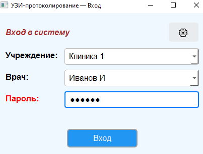
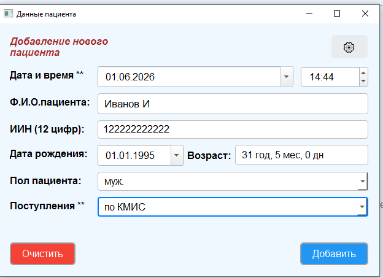
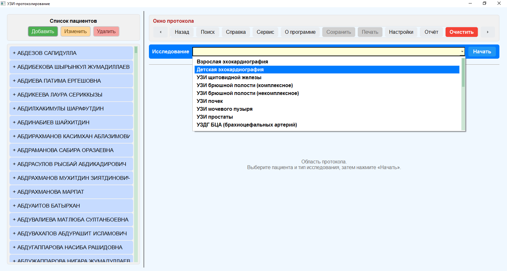
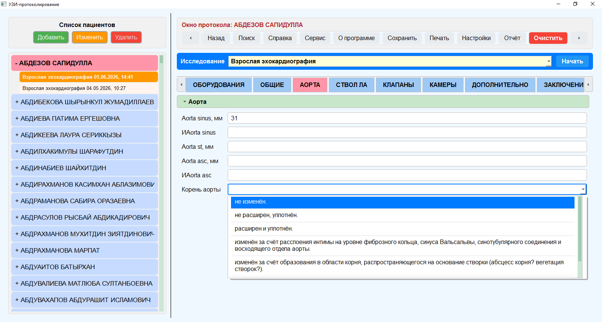
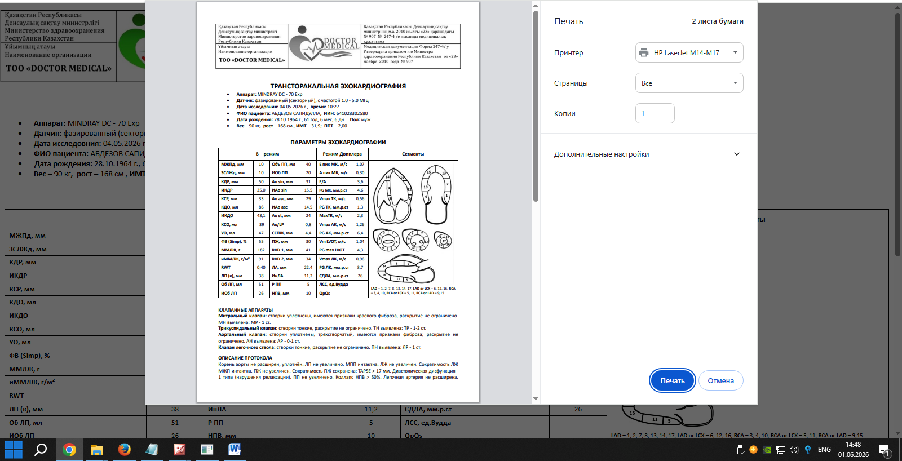

Быстрое заполнение протоколов • Готовые шаблоны • Красивая печать • Хранение истории пациентов
Уже используют более 50 врачей УЗИ в Казахстане
Готовые шаблоны позволяют заполнять протокол за 1–2 минуты вместо 10–15.
Профессиональная печать с вашим логотипом и подписью.
Вся история исследований пациента в одном месте.
Профессиональная медицинская помощь для всей семьи каждый день!. Мы заботимся о вашем удобстве и предлагаем любые форматы обслуживания - бесплатно по госпрограммам (ОСМС/ГОБМП) и на платной основе, доступные цены на все виды услуг, диагностику и лечение для всех желающих. У нас функционируют:
Коды услуг в рамках ГОБМП/ОСМС и тарифы на платное обслуживание:
Собственная разработка специально для врачей ультразвуковой диагностики





С нуля до экспертного уровня
Раздел 1. Введение в ультразвуковую диагностику
Раздел 2. УЗИ-анатомия сердца
Раздел 3. Стандартные эхокардиографические доступы
Раздел 4. Режимы эхокардиографии
Раздел 5. Измерения в эхокардиографии
Раздел 6. Оценка систолической и диастолической функции
Раздел 7. Диагностика клапанной болезни сердца: недостаточность и стеноз митрального, трикуспидального, аортального клапанов и клапана лёгочной артерии, а также диагностика клапанных протезов
Раздел 8. Диагностика ишемической болезни сердца и заболеваний миокарда
Раздел 9. Диагностика заболеваний эндокарда
Раздел 10. Диагностика заболеваний перикарда
Раздел 11. Диагностика лёгочной гипертензии
Раздел 12. Диагностика кардиомиопатий
Раздел 13. Диагностика опухолей сердца и внутрисердечных образований, а также визуализация электрокардиостимуляторов
Раздел 14. Диагностика заболеваний аорты
Раздел 15. Врождённые пороки сердца
Раздел 16. Особенности оформления эхокардиографического заключения в программе UZIprotocols
Примечание: каждый раздел можно приобрести отдельно !!!
Приобрести курсС нуля до экспертного уровня
Раздел 1. Введение в ультразвуковую диагностику
Раздел 2. УЗИ-анатомия сердца, особенности детской анатомии
Раздел 3. Стандартные эхокардиографические доступы
Раздел 4. Нестандартные эхокардиографические доступы
Раздел 5. Режимы эхокардиографии
Раздел 6. Сегментарный анализ сердца
Раздел 7. Измерения в эхокардиографии. Z-score в педиатрической эхокардиографии
Раздел 8. Оценка систолической и диастолической функции
Раздел 9. Диагностика клапанной болезни сердца: недостаточность и стеноз митрального, трикуспидального, аортального клапанов и клапана лёгочной артерии, а также диагностика клапанных протезов
Раздел 10. Диагностика заболеваний миокарда, эндокарда и перикарда
Раздел 11. Диагностика лёгочной гипертензии
Раздел 12. Диагностика кардиомиопатий
Раздел 13. Диагностика внутрисердечных образований
Раздел 14. Диагностика заболеваний аорты
Раздел 15. Врождённые пороки сердца
Раздел 16. Особенности оформления эхокардиографического заключения в программе UZIprotocols
Примечание: каждый раздел можно приобрести отдельно !!!
Приобрести курсС нуля до экспертного уровня
Раздел 1. Введение в ультразвуковую диагностику
Раздел 2. Анатомия шейных сегментов БЦА
Раздел 3. УЗ-доступы и методика исследования
Раздел 4. Принципы допплерографии и измерений
Раздел 5. Толщина комплекса интима-медиа и оценка кардиоваскулярного риска
Раздел 6. Диагностика атеросклеротических бляшек
Раздел 7. Методы оценки стенозов БЦА
Раздел 8. Диагностика неатеросклеротической артериальной патологии
Раздел 9. Оценка сонных артерий после эндартерэктомии и ангиопластики
Раздел 10. Особенности оформления УЗИ-заключения в программе UZIprotocols
Примечание: каждый раздел можно приобрести отдельно !!!
Приобрести курсС нуля до экспертного уровня
Раздел 1. Введение в ультразвуковую диагностику
Раздел 2. Анатомия артерий и вен верхних конечностей
Раздел 3. УЗ-доступы и методика исследования артериального и венозного русла. Принципы допплерографии и измерений
Раздел 4. Диагностика стенозов подключичных и подмышечных артерий
Раздел 5. Диагностика неатеросклеротических заболеваний артерий верхних конечностей
Раздел 6. Диагностика заболеваний вен верхних конечностей и системы верхней полой вены
Раздел 7. Ультразвуковая диагностика диализных фистул
Раздел 8. Особенности оформления УЗИ-заключения в программе UZIprotocols
Примечание: каждый раздел можно приобрести отдельно !!!
Приобрести курсС нуля до экспертного уровня
Раздел 1. Введение в ультразвуковую диагностику
Раздел 2. УЗ-анатомия артерий и вен нижних конечностей
Раздел 3. УЗ-доступы и методика исследования артериального и венозного сегментов
Раздел 4. Принципы допплерографии и измерений артерий и вен нижних конечностей
Раздел 5. Толщина комплекса интима-медиа общей бедренной артерии
Раздел 6. Диагностика атеросклеротических бляшек артерий нижних конечностей
Раздел 7. Методы оценки стенозов артерий нижних конечностей
Раздел 8. Диагностика неатеросклеротической артериальной патологии
Раздел 9. Принципы диагностики варикозной болезни нижних конечностей. Венозные рефлюксы
Раздел 10. Принципы диагностики тромбоза поверхностных и глубоких вен нижних конечностей
Раздел 11. Посттромбофлебитическая болезнь
Раздел 12. Послеоперационная оценка артерий и вен нижних конечностей
Раздел 13. Особенности оформления УЗИ-заключения в программе UZIprotocols
Примечание: каждый раздел можно приобрести отдельно !!!
Приобрести курсС нуля до экспертного уровня
Раздел 1. Введение в ультразвуковую диагностику
Раздел 2. УЗДГ почечных артерий: УЗ-анатомия, методика исследования и диагностика заболеваний почечных артерий
Раздел 3. УЗДГ сосудов печени: УЗ-анатомия, методика исследования и диагностика заболеваний сосудов печени
Раздел 4. УЗДГ сосудов селезёнки: УЗ-анатомия, методика исследования и диагностика заболеваний сосудов селезёнки
Раздел 5. УЗДГ брюшной аорты: УЗ-анатомия, методика исследования и диагностика заболеваний брюшной аорты
Раздел 6. Послеоперационная оценка почечных артерий, сосудов печени и селезёнки
Раздел 7. Особенности оформления УЗИ-заключения в программе UZIprotocols
Примечание: каждый раздел можно приобрести отдельно !!!
Приобрести курсС нуля до экспертного уровня
Раздел 1. Введение в ультразвуковую диагностику
Раздел 2. УЗ-анатомия щитовидной, паращитовидной железы и окружающих тканей шеи. Топография шеи
Раздел 3. УЗ-доступы и методика исследования
Раздел 4. Принципы измерения и методы допплерографии щитовидной железы
Раздел 5. Диффузные изменения
Раздел 6. Очаговые изменения
Раздел 7. Патология паращитовидных желез
Раздел 8. Эластография щитовидной железы
Раздел 9. Послеоперационная оценка
Раздел 10. Особенности оформления УЗИ-заключения в программе UZIprotocols
Примечание: каждый раздел можно приобрести отдельно !!!
Приобрести курсС нуля до экспертного уровня
Раздел 1. Введение в ультразвуковую диагностику
Раздел 2. УЗ-анатомия лимфатических узлов шеи. Топография шеи
Раздел 3. УЗ-доступы и методика исследования
Раздел 4. Принципы измерений и методы допплерографии
Раздел 5. УЗ-признаки доброкачественных изменений лимфатических узлов
Раздел 6. УЗ-признаки злокачественных изменений лимфатических узлов
Раздел 7. Эластография лимфатических узлов шеи
Раздел 8. Послеоперационная оценка
Раздел 9. Особенности оформления УЗИ-заключения в программе UZIprotocols
Примечание: каждый раздел можно приобрести отдельно !!!
Приобрести курсС нуля до экспертного уровня
Раздел 1. Введение в ультразвуковую диагностику
Раздел 2. УЗИ печени: УЗ-анатомия, методика исследования, измерения и диагностика заболеваний
Раздел 3. УЗИ желчного пузыря и его протоков: УЗ-анатомия, методика исследования, измерения и диагностика заболеваний
Раздел 4. УЗИ поджелудочной железы: УЗ-анатомия, методика исследования, измерения и диагностика заболеваний
Раздел 5. УЗИ селезёнки: УЗ-анатомия, методика исследования, измерения и диагностика заболеваний
Раздел 6. Эластография печени
Раздел 7. Послеоперационная оценка печени, желчного пузыря, поджелудочной железы и селезёнки
Раздел 8. Особенности оформления УЗИ-заключения в программе UZIprotocols
Примечание: каждый раздел можно приобрести отдельно !!!
Приобрести курсС нуля до экспертного уровня
Раздел 1. УЗИ почек: УЗ-анатомия, методика исследования, измерения и диагностика заболеваний
Раздел 2. УЗИ мочеточников: УЗ-анатомия, методика исследования, измерения и диагностика заболеваний
Раздел 3. УЗИ мочевого пузыря: УЗ-анатомия, методика исследования, измерения и диагностика заболеваний
Раздел 4. УЗИ предстательной железы: УЗ-анатомия, методика исследования, измерения и диагностика заболеваний
Раздел 5. Послеоперационная оценка почек и мочевого пузыря
Раздел 6. Особенности оформления УЗИ-заключения в программе UZIprotocols
Примечание: каждый раздел можно приобрести отдельно !!!
Приобрести курсС нуля до экспертного уровня
Раздел 1. Введение в ультразвуковую диагностику
Раздел 2. УЗ-анатомия головного мозга
Раздел 3. УЗ-доступы и методика исследования головного мозга
Раздел 4. Принципы измерений в нейросонографии. Вентрикулометрия
Раздел 5. Принципы допплерографии
Раздел 6. УЗ-диагностика головного мозга у недоношенных детей
Раздел 7. Врождённые аномалии головного мозга
Раздел 8. Патология головного мозга (гидроцефалия, субдуральные, субарахноидальные, внутрижелудочковые и внутримозговые кровоизлияния, лейкомаляция, кисты и образования, внутричерепная гипертензия, нейроинфекции)
Раздел 9. Особенности оформления УЗИ-заключения в программе UZIprotocols
Примечание: каждый раздел можно приобрести отдельно !!!
Приобрести курсС нуля до экспертного уровня
Раздел 1. Введение в ультразвуковую диагностику
Раздел 2. УЗ-анатомия тазобедренного сустава у детей
Раздел 3. УЗ-доступы и методика исследования
Раздел 4. Принципы измерений. Методика Graf
Раздел 5. Особенности оформления УЗИ-заключения в программе UZIprotocols
Примечание: каждый раздел можно приобрести отдельно !!!
Приобрести курсС нуля до экспертного уровня
Раздел 1. Электрокардиография (ЭКГ)
Раздел 2. Суточное мониторирование по Холтеру
Раздел 3. Суточное мониторирование артериального давления (СМАД)
Раздел 4. Спирография
Раздел 5. Особенности оформления заключения в программе UZIprotocols
Примечание: каждый раздел можно приобрести отдельно !!!
Приобрести курсАдресс: г. Туркестан, мкр. Самал, Т. Нышанов 10Д
WhatsApp: +7 705 690 99 33
Email: doc-690@mail.ru